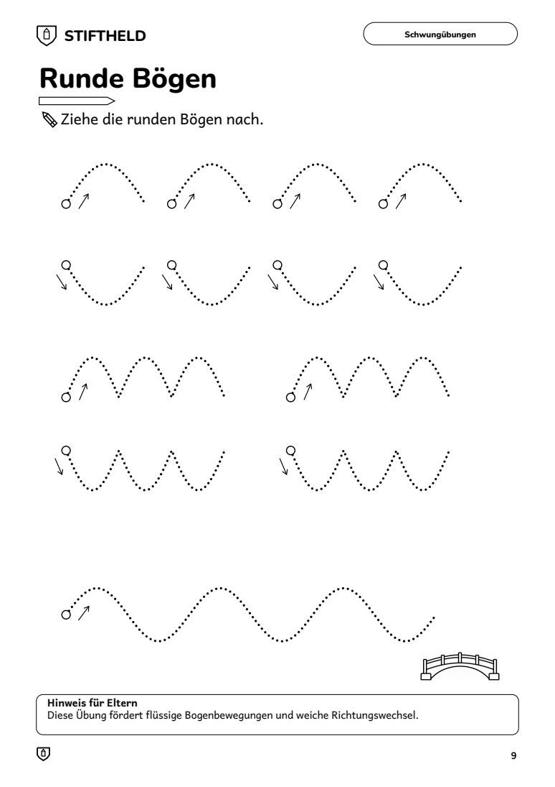
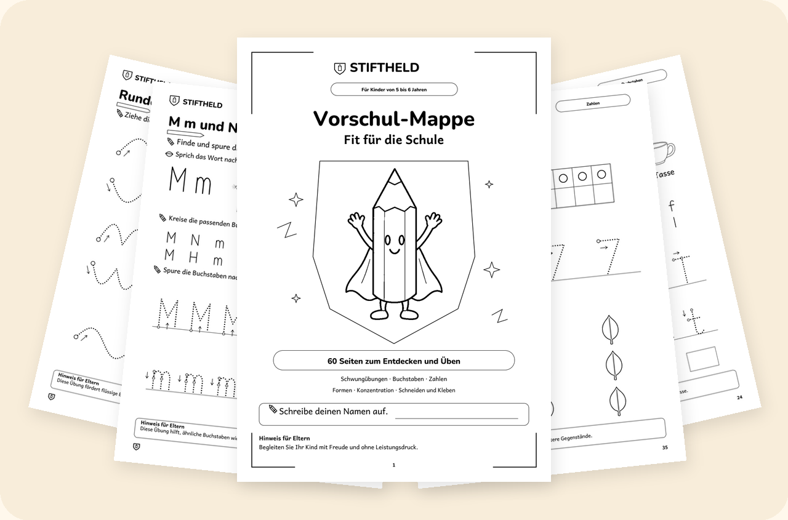
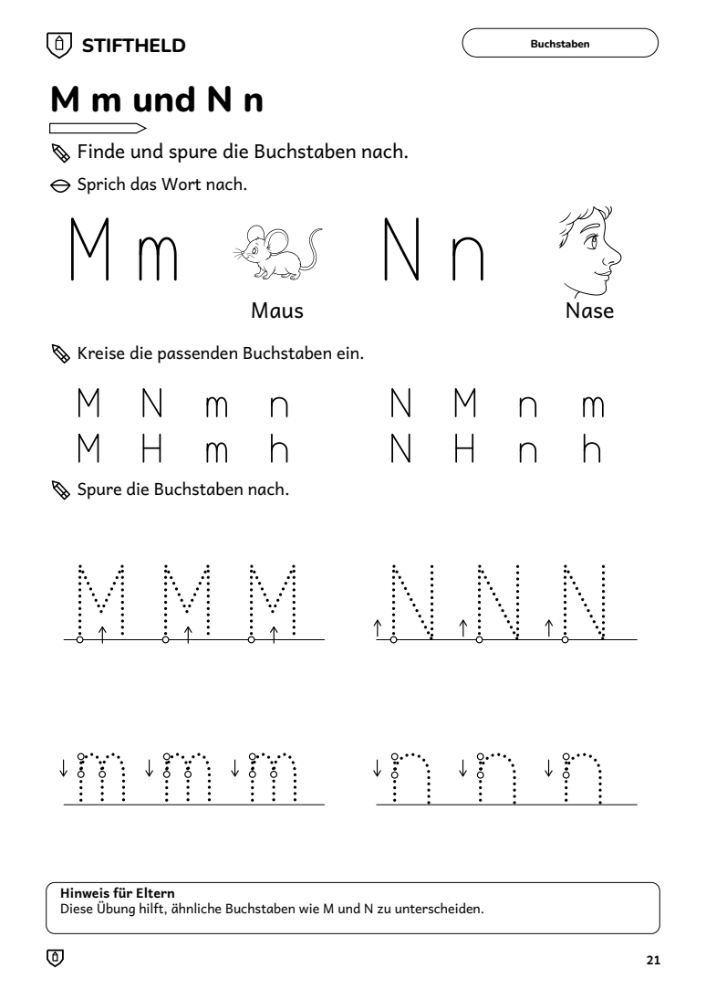
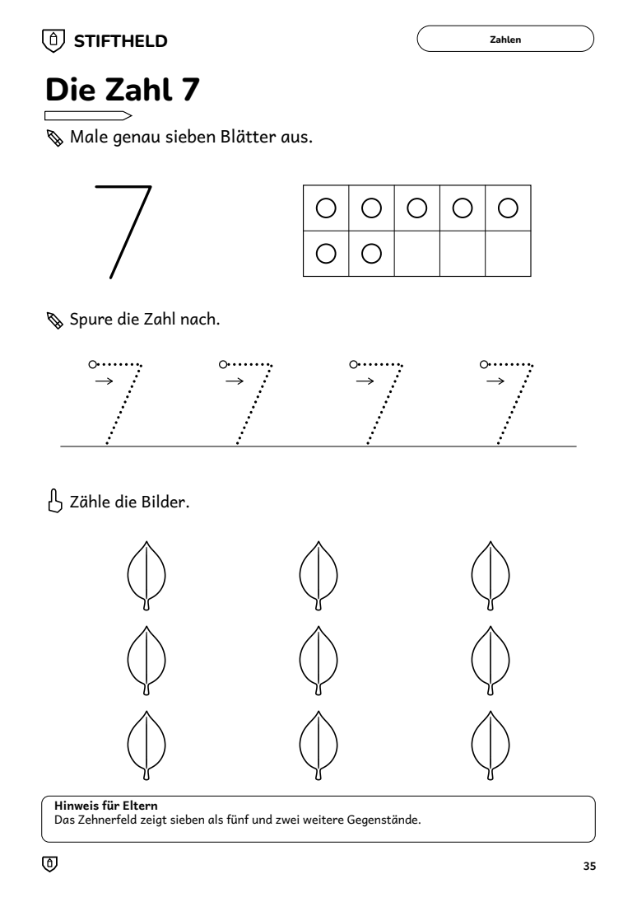
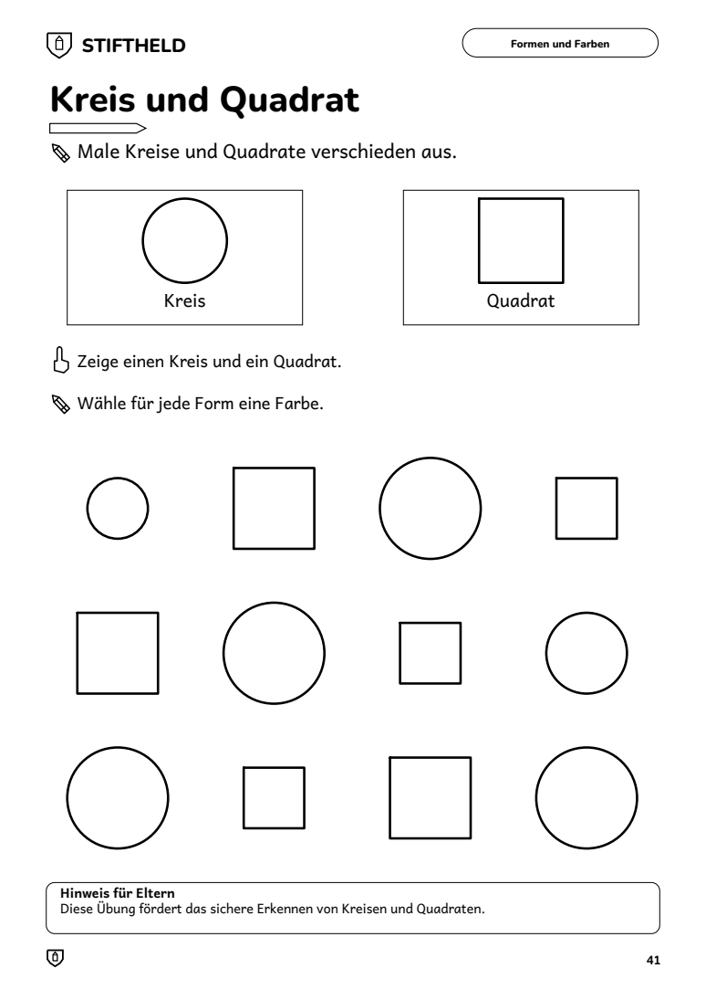
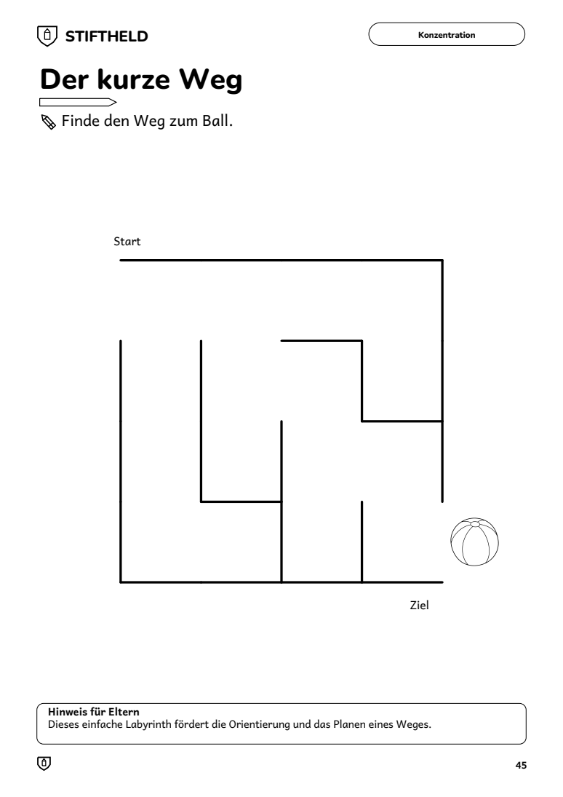
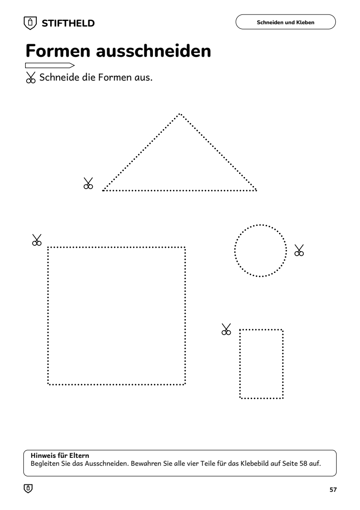
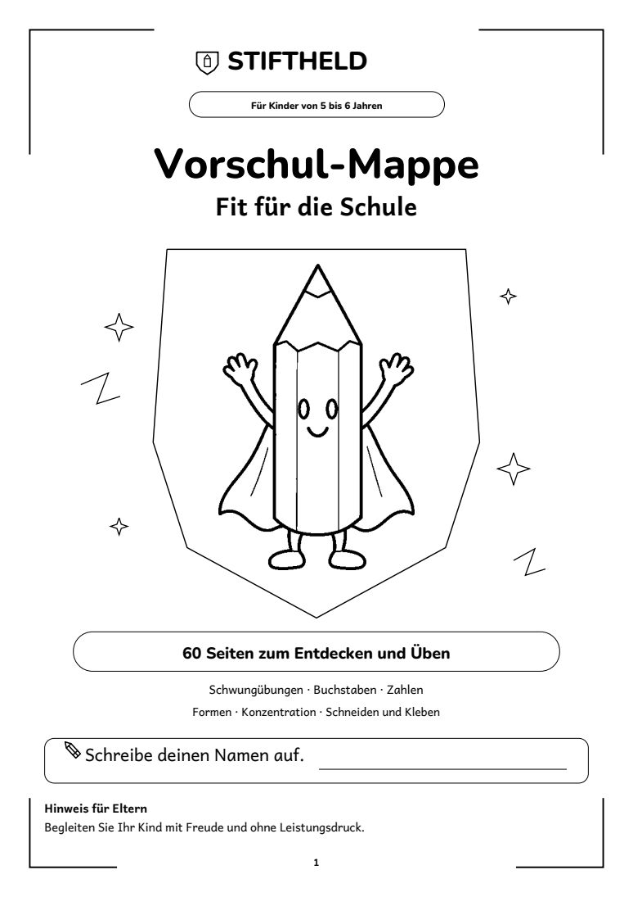

Schwungübungen
Gerade Linien, Bögen, Wellen, Kreise, Schleifen und Spiralen. Von einfach bis knifflig.
60 Seiten zum Ausdrucken. Spielerisch und ohne Druck.
Jetzt für 19 € herunterladen
Vielleicht fragst du dich gerade:
Kann mein Kind den Stift schon richtig halten?
Erkennt es die ersten Buchstaben?
Wie übe ich zu Hause, ohne dass es nach Schule und Pflicht klingt?
Die Vorschul-Mappe begleitet dein Kind Seite für Seite: von einfachen Schwungübungen über Buchstaben und Zahlen bis zum ersten Ausschneiden. Jede Aufgabe ist kurz, klar erklärt und mit einem Hinweis für Eltern versehen. So siehst du immer, was dein Kind gerade übt.

Gerade Linien, Bögen, Wellen, Kreise, Schleifen und Spiralen. Von einfach bis knifflig.

A bis Z in Druckschrift mit Bildwörtern, Suchaufgaben und Nachspuren. Dazu eine Seite für den eigenen Namen.

Die Zahlen 1 bis 10 mit Fünfer- und Zehnerfeld, dazu Zählen bis 20 als freiwillige Erweiterung.

Kreis, Quadrat, Dreieck und Rechteck erkennen und ausmalen.

Labyrinthe, Unterschiede finden, Muster fortsetzen und Umrisse zuordnen.

Von geraden Linien über Zacken und Kurven bis zum eigenen Klebehaus.
Dazu: Elternbrief, Inhaltsverzeichnis, Übungsplan, „Das kann ich schon!“ und eine Urkunde zum Abschluss.
Spielerisch und ohne Druck.
Sicher bezahlen, zum Beispiel mit PayPal.
Du bekommst die PDF-Datei sofort per E-Mail.
Auf A4, so oft du möchtest.
Nicht das Richtige, wenn du ein gebundenes Heft per Post erwartest: Die Mappe ist ein digitaler Download zum Selbstausdrucken.

60 Seiten zum Ausdrucken · Sofort als Download
(inkl. MwSt.)
Jetzt herunterladenDrucke die ersten Seiten aus und probiere sie mit deinem Kind aus. Wenn die Mappe nicht zu euch passt, bekommst du innerhalb von 15 Tagen dein Geld zurück. Eine kurze Nachricht genügt.
Direkt nach dem Kauf erhältst du eine E-Mail mit dem Download-Link. Du kannst die PDF-Datei sofort herunterladen.
Nein. Die Mappe ist tintensparend gestaltet und zum Ausmalen gemacht. Die Farbe bringt dein Kind mit Buntstiften selbst dazu.
Auf A4, nur auf der Vorderseite und mit 100 % Skalierung, ohne Anpassung an die Seite. So passen die Teile der Schneide- und Klebeaufgaben zusammen.
Die Buchstaben stehen in Druckschrift, so wie Kinder sie zu Beginn der Grundschule lernen.
Für Kinder von 5 bis 6 Jahren im letzten Jahr vor der Einschulung.
Ja, für den Gebrauch in deiner Familie so oft du möchtest. Für Kitas und Schulen schreib uns bitte eine Nachricht.
Ja. Die Mappe ist für Familien in Deutschland, Österreich und der Schweiz gedacht.
Sicher über unsere Zahlungsplattform, zum Beispiel mit PayPal oder Kreditkarte.
Dann bekommst du innerhalb von 15 Tagen dein Geld zurück. Eine kurze Nachricht genügt.